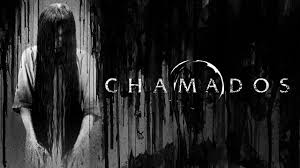
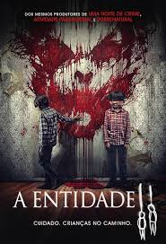
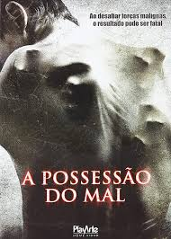

TERROR
Voltar á página inicial

Terror ou horror é um gênero literário, cinematográfico ou musical,
que está sempre muito ligado à fantasia e à ficção especulativa,
e é criado com intuito de causar medo, aterrorizar.
Também pode ser verificado na pintura, no desenho, nos filmes e fotografia.
A abstrata ideia de terror ou o ato de transmitir o sentimento de terror ou horror pode ser verificado em todas as formas de arte.
Ao decorrer da década de 1990, até os dias de hoje, o gênero também compreende um estilo de desenvolvimento de jogos eletrônicos.

